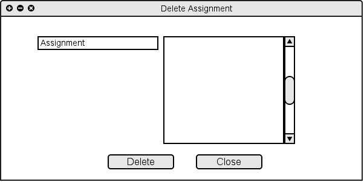

The user can remove assignments by clicking on Delete Assignment under "Name" drop down list. Similarly the user can remove categories of assignments by clicking Delete Category under "Category" drop down list.
Figure 2.4.3 A: Deleting an Assignment / Category
After clicking the "Delete Assignment", the software shows the figure 2.4.3 B. In this dialouge the user can choose an assignment and delete it.

Figure 2.4.1 B: Adding New Assignment
Similarly, after clicking the "Delete Category", the software shows the figure 2.4.1 C. In this dialouge the user can choose and delete categories of assignments.
Figure 2.4.3 C: Deleting Category
Figure 2.4.3 D: Result of deleting assignment "Quiz 1" and category "Homework"